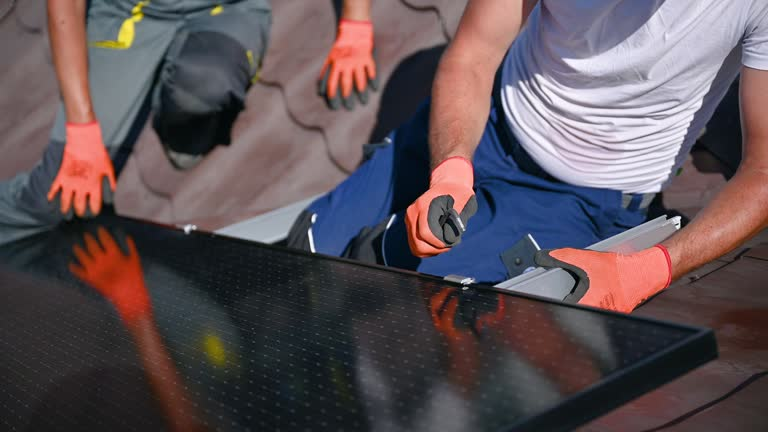

Ridgewood New Jersey
info@asapstatewideseptic.pro
Ridgewood New Jersey
info@asapstatewideseptic.pro

Looking for professional septic services in Ridgewood New Jersey ? Our experienced technicians provide septic tank installation, repair, and maintenance to keep your system running smoothly year-round.
Click Here To Call Us (877) 848-1711At , we understand the importance of a properly functioning septic system for your home or business in Ridgewood New Jersey . Whether you need septic tank cleaning, repair, or installation, our team of skilled professionals is here to provide high-quality services tailored to your specific needs. Our septic services in Ridgewood New Jersey are designed to ensure that your system runs smoothly and efficiently, preventing costly repairs and unpleasant issues down the line.
Comprehensive Septic Solutions in Ridgewood New Jersey
We offer a full range of septic services, from routine maintenance to emergency repairs. Our expert technicians are trained to handle all types of septic systems, ensuring that your system is thoroughly inspected, cleaned, and repaired when necessary. Regular maintenance is essential to extending the lifespan of your septic system, and our team can help you create a maintenance plan that suits your needs.
Why Choose Us for Your Septic Services in Ridgewood New Jersey ?
Choosing means working with a trusted local provider dedicated to delivering fast, affordable, and reliable septic solutions. Our years of experience serving customers in Ridgewood New Jersey ensure that your septic system is in capable hands. We pride ourselves on transparent pricing, professional service, and a commitment to customer satisfaction.
Don’t let septic problems disrupt your day—contact us today to schedule your septic service in Ridgewood New Jersey !
Residential & commercial septic service
Quality services at affordable prices
Immediate 24/ 7 emergency services


When it comes to professional septic tank installation in Ridgewood New Jersey our expert team is here to provide top-notch services that ensure the efficient management of your home's wastewater. At septic service, we specialize in expert septic tank installation for homeowners and businesses across Ridgewood New Jersey helping you maintain a healthy, functional, and eco-friendly septic system.
Septic tanks play a crucial role in managing wastewater, and improper installation can lead to costly repairs or system failures. Our certified technicians have years of experience in designing and installing septic systems tailored to your property’s unique needs. We use advanced tools and the best materials to ensure that your septic tank is installed correctly and operates smoothly for years to come.
Why choose us for septic tank installation in Ridgewood New Jersey ? We are dedicated to delivering exceptional service with attention to detail and compliance with all local regulations. Our professionals will guide you through every step of the process, from site evaluation to installation, ensuring you have a hassle-free experience. We pride ourselves on our reputation for quality work and customer satisfaction.
Contact us today for expert septic tank installation in Ridgewood New Jersey and let us take care of your septic needs with precision and care. Whether you're installing a new system or replacing an old one, we're your trusted experts in Ridgewood New Jersey .
Residential & commercial septic service
Quality services at affordable prices
Immediate 24/ 7 emergency services
Septic emergencies can arise unexpectedly, and quick response is crucial to minimizing impact on your business. At septic service, we provide emergency septic services for commercial properties ready to tackle urgent issues efficiently.
Our skilled professionals are available around the clock, equipped to handle emergencies like backups, leaks, and system failures. We pride ourselves on our rapid response times and effective solutions, protecting your property and operations. Trust septic service to ensure your septic system is back up and running in no time.

Regular inspections are vital for the proper functioning of septic systems in commercial buildings. At septic service, we specialize in septic system inspections for commercial properties identifying potential issues before they escalate.
Our skilled inspectors utilize advanced technology to conduct thorough evaluations, providing you with detailed reports on system performance and maintenance suggestions. We focus on minimizing disruptions to your business by scheduling inspections at your convenience. Schedule with septic service for dependable inspections that support the longevity of your septic system.

Regular inspections are essential for the health and functionality of commercial septic systems. At septic service, we provide comprehensive septic system inspections tailored to the needs of commercial buildings . Our experienced inspectors assess every aspect of your system, ensuring it operates smoothly and complies with local regulations.
We use advanced diagnostic tools to identify potential issues and provide detailed reports that outline the condition of your system. Our inspections help you take proactive steps to address minor issues before they develop into costly repairs, ensuring longevity and compliance.
Partnering with us means choosing a team committed to excellence and transparency. We explain our findings and recommendations clearly, enabling you to make informed decisions about your septic system's health and functionality.

At septic service, we offer a range of specialized septic services designed to address unique challenges. Our team of experts is equipped to handle various septic issues, ensuring your system operates efficiently. Whether it's locating a septic tank, controlling odors, or providing pumping services for rural properties, we have the knowledge and tools to deliver effective solutions. By choosing us for specialized septic services, you're partnering with a company that values expertise and customer satisfaction in every service.

Knowing the exact location of your septic tank is crucial for maintenance and repairs. At septic service, we provide professional septic tank location services utilizing advanced technology to pinpoint your tank’s location accurately.
Our trained technicians understand the importance of this service and work diligently to avoid disrupting your property. With our detailed reports, you can easily schedule maintenance and repairs confidently. Trust septic service to help you find your septic tank quickly and efficiently.
Offensive odors from your septic system can be problematic and disruptive. Our septic tank odor control solutions focus on identifying and eliminating the sources of odors, ensuring a pleasant environment for your home or business.
We employ a combination of inspection and treatment options tailored to address your specific issues effectively. Trust our experienced team to help you maintain a fresh atmosphere while keeping your septic system functional.

Unpleasant odors from your septic system can be more than just a nuisance; they can indicate underlying issues. At septic service, we specialize in septic tank odor control solutions designed to eliminate foul smells and address the core issues causing the problems.
Our team conducts thorough assessments to identify the source of odors, whether it's a build-up of solids, improper ventilation, or other issues. We provide practical solutions tailored to your specific situation, ensuring that odors are mitigated effectively.
Choosing septic service for odor control means selecting a partner that understands the importance of a clean and pleasant environment. We take pride in our customer service, working to ensure your home or business maintains a fresh atmosphere while safeguarding your septic system.

Aerobic septic systems are an excellent option for properties that require enhanced treatment of waste. At septic service, we specialize in aerobic septic system installation and repair services in Ridgewood New Jersey providing effective solutions for both new installations and system issues.
Our qualified technicians are dedicated to ensuring your aerobic system functions optimally, with systems designed to meet your property’s specific needs. We provide ongoing maintenance and support to extend the lifespan of your aerobic septic systems while ensuring compliance with environmental regulations. Count on septic service for reliable aerobic septic services.

For properties with challenging soil conditions or high water tables, aerobic septic systems present an effective solution. At septic service, we specialize in the installation and repair of aerobic septic systems tailored to the unique needs of residents .
Our team guides you through the entire process, from system selection to installation and ongoing maintenance. Aerobic systems offer enhanced waste treatment, making them ideal for properties where traditional systems may fail to perform effectively.
When you choose us for your aerobic septic system needs, you receive a comprehensive service that focuses on compliance, efficiency, and sustainability. Our skilled technicians ensure that your system operates optimally, protecting both your property and the environment.
Years Experience
Expert Technicians
Satisfied Clients
Compleate Projects
When it comes to reliable septic services in Ridgewood New Jersey ASAP Statewide Septic is the name you can trust. With years of experience, we have built a reputation for providing top-notch septic solutions to homeowners and businesses across Ridgewood New Jersey . Whether you need routine maintenance, repairs, or a complete septic system installation, we deliver unparalleled service every time.
Our team of skilled technicians is trained to handle every septic challenge, big or small. We use the latest technology and techniques to ensure your septic system operates efficiently, saving you time and money. We understand the urgency of septic problems, which is why our services are prompt, thorough, and designed to prevent costly future issues.
At ASAP Statewide Septic, we prioritize customer satisfaction above all else. Our technicians are not only experts in their field but also friendly and professional, ensuring a stress-free experience from start to finish. We offer competitive pricing and transparent quotes, so you never have to worry about hidden fees.
We are dedicated to ensuring that your septic system remains in peak condition, minimizing potential disruptions to your daily life. Serving every city in Ridgewood New Jersey ASAP Statewide Septic is your local partner for dependable septic service that goes the extra mile. Choose us for a cleaner, more efficient septic system, and experience the ASAP difference today!
The cornerstone of a well-functioning septic system is a properly installed septic tank. Our septic tank installation services focus on comprehensive planning, expert site evaluation, and meticulous installation techniques. We understand that no two properties are the same, which is why we customize every installation to fit your specific land characteristics and household needs.
Choosing our septic tank installation means you will benefit from our expert consultation to select the best tank material and size, ensuring optimal performance and compliance with local regulations. Our experienced team follows all safety standards and procedures to ensure your system is set up for long-term success. We pride ourselves in delivering quality service that keeps our clients happy and satisfied.
Installing a septic tank is a significant investment for any homeowner. At septic service, we offer expert septic tank installation services designed to meet the unique needs of your property. Our highly trained technicians assess your land and soil conditions to recommend the most suitable tank size and type for optimal performance.
Our installation process adheres to local regulations and best practices to ensure compliance and reliability. We focus on using high-quality materials and advanced tools to provide seamless installations that can withstand the test of time. Our commitment to quality means fewer repairs and maintenance issues down the line, giving you reassurance that your septic system will function as intended for years.
Moreover, we provide post-installation guidance and maintenance tips to help you manage your new septic system effectively. Investing in a septic tank installation with septic service means prioritizing long-term efficiency and value for your property .
Regular septic tank pumping is essential to maintain the health of your septic system. At septic service, we provide comprehensive septic tank pumping services ensuring that your system efficiently removes waste and avoids backups.
Our team understands the timeline for pumping varies among homes and factors such as tank size and household use. We offer personalized schedules and reminders to ensure your tank is pumped when needed. With state-of-the-art equipment and trained professionals, we provide a hassle-free experience that adheres to safety protocols and environmental regulations. Trust us to keep your septic system running smoothly and effectively.
Maintaining a clean septic tank is crucial for the overall health of your system. At septic service, we offer comprehensive septic tank cleaning and maintenance services that keep your system running smoothly. Our team employs specialized equipment to clean your tank and eliminate any buildup that could lead to future problems. We also provide insightful maintenance tips to help you prolong the lifespan of your system. With our reliable services, you can enjoy worry-free operation of your septic system for years to come.
A septic system inspection is a vital part of home ownership, particularly if you're purchasing or selling a property. At septic service, we specialize in septic system inspections in Ridgewood New Jersey providing comprehensive evaluations to identify any potential issues that could affect the system's longevity or compliance with local regulations.
Our licensed professionals use advanced diagnostic tools to assess the health of your septic system thoroughly. We provide clear and detailed reports, empowering you to make informed decisions regarding repairs or replacements. Our commitment to transparency and customer education makes us the preferred choice for septic system inspections . With septic service, you can ensure peace of mind regarding your waste management system.
When your septic tank has reached the end of its lifespan, timely replacement is critical to preventing sewage backups and health hazards. At septic service, we offer professional septic tank replacement services in Ridgewood New Jersey tailored to meet your specific needs.
Our experienced team conducts a thorough assessment of your existing system to determine the most suitable replacement options. We ensure compliance with all local regulations while selecting high-quality materials that offer durability and long-term performance. Our comprehensive installation process includes everything from excavation to final inspections. Choose septic service for your septic tank replacement needs and enjoy a reliable waste management system for years to come.
Damaged or blocked septic lines can lead to severe problems, including unsightly backups and potential health hazards. Our expert team provides efficient septic line repair services in Ridgewood New Jersey focusing on restoring functionality as quickly as possible. We can detect and resolve issues like leaks, blockages, and displaced lines with precision.
By opting for our septic line repair services, you gain access to advanced diagnostic tools, ensuring timely repairs and a thorough understanding of the problem at hand. Our skilled technicians are always ready to tackle any challenges you may face, with commitment to quality, value, and customer satisfaction.
If you’re experiencing septic system issues but can’t pinpoint the cause, our septic system troubleshooting services in Ridgewood New Jersey can help. Our team of experienced professionals knows how to diagnose complex problems through detailed examinations and assessments to get your system back on track.
We understand the nuances behind septic systems, which allows us to offer tailored solutions to resolve your troubles effectively. Our proactive approach ensures minimal disruption and optimal results. By choosing our troubleshooting services, you partner with a team that emphasizes transparency and communication throughout the process.
Installing a new septic system pump can improve efficiency and performance. At septic service, we specialize in septic system pump installation services that follow best practices and local regulations. Our skilled technicians assess your current system to recommend the right pump for your needs, ensuring the longevity and performance of your system. Our commitment to quality installations guarantees a seamless integration with your existing system. By choosing us, you are making a smart investment in the maintenance of your home’s waste management system.
The last thing you want is a septic backup ruining your day, and our prevention and solution services in Ridgewood New Jersey are tailored to protect your home from such disasters. We employ preventative strategies, including regular inspections, proper usage education, and routine maintenance to ensure you avoid those costly messes.
Our team is dedicated to providing exceptional service, promptly addressing any potential issues before they escalate. Trust in our knowledge and expertise to keep your septic system functioning smoothly and your home free from distress.
Preventing septic backups is essential for maintaining a clean and functional home environment. At septic service, we specialize in septic backup prevention and solutions that keep your system running smoothly. Our team provides thorough inspections and maintenance services designed to identify and mitigate potential backup risks.
We educate our clients on proper usage and maintenance practices, from what can and cannot be flushed or washed down the drain to the importance of regular pumping and inspections. By adopting a proactive approach, you can avoid costly and inconvenient backups.
When it comes to solutions, our team is outfitted with state-of-the-art technology to address any backup issues efficiently, should they arise. Trust septic service as your partner in septic maintenance and emergency responses in Ridgewood New Jersey .
Installing a robust and compliant septic system is crucial for any commercial property. At septic service, we excel in commercial septic system installation ensuring your business has a reliable waste management solution tailored to your needs.
Our experts conduct thorough site evaluations to determine the optimal system design that complies with local codes and regulations. We pride ourselves on using high-quality materials and advanced technologies for installations that stand the test of time. By choosing septic service, you'll benefit from our knowledge and experience, ensuring your septic system meets current standards and operates efficiently.
Regular septic tank pumping is vital for commercial properties to prevent backups and ensure a smooth operation. Our commercial septic tank pumping services are designed for businesses seeking prompt and reliable waste management solutions. We offer expertly executed pumping services that minimize disturbances to your daily operations.
Our technicians are prompt, professional, and equipped with the latest tools to effectively pump and maintain your septic tank. Choose us for on-time and efficient service that adheres to local regulations and industry standards, ensuring your business remains compliant and operational.
Managing waste effectively is crucial for food service and hospitality businesses. At septic service, we offer specialized grease trap and commercial waste removal services designed to keep your operations compliant and sanitary. Our experienced technicians are trained in the best practices for grease trap cleaning and removal, ensuring your systems perform optimally. By choosing us, you benefit from our commitment to customer satisfaction and compliance with health regulations, safeguarding your business from waste-related issues.
Designing a septic system that meets the specific needs of your business is a critical investment. At septic service, we offer professional septic system design and consultation services tailored to commercial properties.
Our team of experts collaborates with you to evaluate your waste management needs and environmental considerations. From initial assessments to designing systems that comply with local guidelines, we ensure your septic solution is efficient and reliable. Our commitment to quality service and customer satisfaction positions us as a leader in the septic industry.
Restaurants and hotels require reliable septic systems to ensure their operations run smoothly. At septic service, we specialize in septic system repair for restaurants and hotels tackling issues that could disrupt your business.
Our experienced technicians promptly identify and resolve septic issues using the best practices in the industry. We understand the urgency of these repairs and prioritize quick response times to avoid interruptions to your operations. With our expertise, septic service ensures your septic system remains a dependable asset for your business.
Large buildings require sophisticated waste management solutions, and our high-capacity septic systems in Ridgewood New Jersey are designed to accommodate significant wastewater loads safely and effectively. We specialize in designing and installing systems tailored to meet your building's needs, ensuring that your investment is worthwhile.
By choosing us, you can expect an expert evaluation of your requirements and a consultation regarding optimal system specifications. Our commitment to high-quality materials and workmanship guarantees a robust and effective solution, keeping your operations running seamlessly.
Complying with local regulations and environmental standards is essential for any commercial property. At septic service, we specialize in septic system compliance services in Ridgewood New Jersey ensuring your business adheres to all necessary guidelines.
Our team conducts thorough assessments and helps you navigate compliance requirements, minimizing risk and potential fines. We stay updated on local regulations to provide businesses with the most current strategies and recommendations. Choose septic service to ensure your septic system meets compliance standards while maintaining operational efficiency.
When it comes to maintaining a healthy home or business, septic tank pumping and cleaning are essential tasks that should never be overlooked. At septic service, we provide expert septic tank pumping and cleaning services across Ridgewood New Jersey to ensure your system operates efficiently and avoids costly repairs. Regular septic tank maintenance is crucial in preventing blockages, backups, and foul odors that can disrupt your daily routine.
Our professional team specializes in thorough cleaning and pumping of septic tanks to keep your system running smoothly for years to come. We use advanced tools and eco-friendly methods to remove built-up sludge and waste, restoring your tank's capacity and functionality. Whether you're experiencing a slow drain, unpleasant smells, or have simply missed a routine service, we're here to help with fast, reliable service that fits your schedule.
Don’t wait for costly damage—schedule your septic tank cleaning in Ridgewood New Jersey today! Our team is trained to handle all sizes and types of septic systems, offering affordable and effective solutions for both residential and commercial properties. We take pride in offering prompt, professional, and environmentally responsible septic tank services that you can trust.
Contact septic service now for septic tank pumping and cleaning in Ridgewood New Jersey and ensure the longevity and efficiency of your system!
Ridgewood is a village in Bergen County, in the U.S. state of New Jersey. Ridgewood is a suburban bedroom community of New York City, located approximately 20 miles (32 km) northwest of Midtown Manhattan. As of the 2020 United States census, the village's population was 25,979, an increase of 1,021 (+4.1%) from the 2010 census count of 24,958, which in turn reflected an increase of 22 (+0.1%) from 24,936 in the 2000 census.
Yes, State Wide Septic specializes in installing new septic systems in Ridgewood New Jersey ensuring compliance with local regulations.
Typically, it takes 1-2 hours. State Wide Septic ensures quick and thorough pumping in Ridgewood New Jersey .
Absolutely. State Wide Septic uses eco-friendly practices to ensure safe and sustainable waste management .
Yes, State Wide Septic offers 24/7 emergency septic services across Ridgewood New Jersey to address urgent issues like backups or system failures.
The cost varies based on the tank size and condition. Contact State Wide Septic for a competitive quote .
Yes, our State Wide Septic team is fully licensed and certified to provide top-quality services in Ridgewood New Jersey .
Immediately stop water usage and contact State Wide Septic for emergency services .
Common signs include slow drains, foul odors, pooling water, and backups. If you notice these issues call State Wide Septic for prompt service.
Backups can result from clogs, improper maintenance, or system overload. State Wide Septic can diagnose and resolve these issues .
Yes, State Wide Septic provides free, no-obligation estimates for all septic services .
The size depends on household size and water usage. Contact State Wide Septic in Ridgewood New Jersey for expert recommendations.
With proper care, septic systems can last 20-30 years. State Wide Septic offers services to extend system life .
Yes, State Wide Septic has the expertise and equipment for large-scale residential or commercial projects .
You can reach State Wide Septic by phone or through our website to schedule services anywhere in Ridgewood New Jersey .
Call or book online with State Wide Septic to schedule convenient septic maintenance anywhere .
Avoid flushing grease, wipes, and non-biodegradable items. Contact State Wide Septic for more tips in Ridgewood New Jersey .
We provide septic services throughout all cities and towns offering reliable solutions statewide.
Slow drains, gurgling sounds, and foul odors often indicate a full tank. Contact State Wide Septic for pumping services in Ridgewood New Jersey .
Yes, State Wide Septic provides environmentally safe treatments for optimal system performance in Ridgewood New Jersey .
Regular maintenance, avoiding non-biodegradable waste, and scheduling inspections with State Wide Septic can help prevent issues in Ridgewood New Jersey .
Yes, State Wide Septic offers customizable maintenance plans for homeowners and businesses .
Yes, State Wide Septic specializes in diagnosing and repairing field line issues across Ridgewood New Jersey .
Yes, State Wide Septic assists with permitting and ensures compliance with local Ridgewood New Jersey regulations.
State Wide Septic provides comprehensive septic services in Ridgewood New Jersey including installation, repair, pumping, and maintenance for residential and commercial systems.
Yes, we offer thorough septic inspections for homebuyers in Ridgewood New Jersey to ensure the system is in good condition.
Yes, State Wide Septic offers efficient septic tank replacement services throughout Ridgewood New Jersey .
We recommend pumping your septic tank every 3-5 years, depending on household size and usage. Contact State Wide Septic for an assessment tailored to your needs in Ridgewood New Jersey .
State Wide Septic ensures efficient and compliant replacements tailored to your needs .
Yes, State Wide Septic provides specialized services for businesses including grease trap cleaning and large-scale system maintenance.
Regular maintenance prevents costly repairs and extends system life. Schedule with State Wide Septic in Ridgewood New Jersey today.
"We had a major issue with our septic system, and ASAP State Wide Septic handled it perfectly. Their service in Ridgewood New Jersey was reliable, affordable, and quick!"
Profession
"The ASAP State Wide Septic team in Ridgewood New Jersey exceeded our expectations. They were professional, efficient, and solved our septic system problem quickly. Definitely recommend!"
Profession
"Great service from ASAP State Wide Septic! They showed up on time, diagnosed the issue right away, and got it fixed quickly. Highly recommend them for any septic needs in Ridgewood New Jersey ."
Profession
Ridgewood NJ septic service Pros
(877) 848-1711
info@asapstatewideseptic.pro
09.00 AM - 09.00 PM
09.00 AM - 12.00 PM